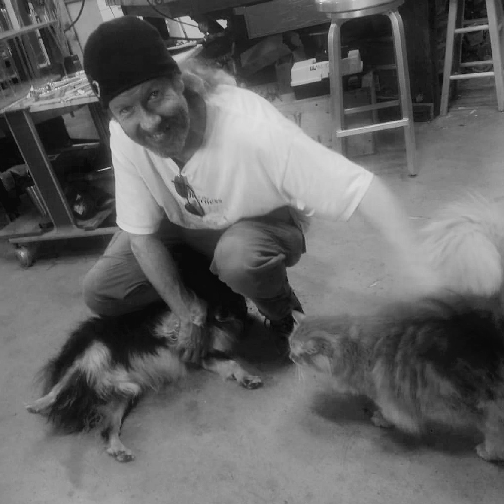
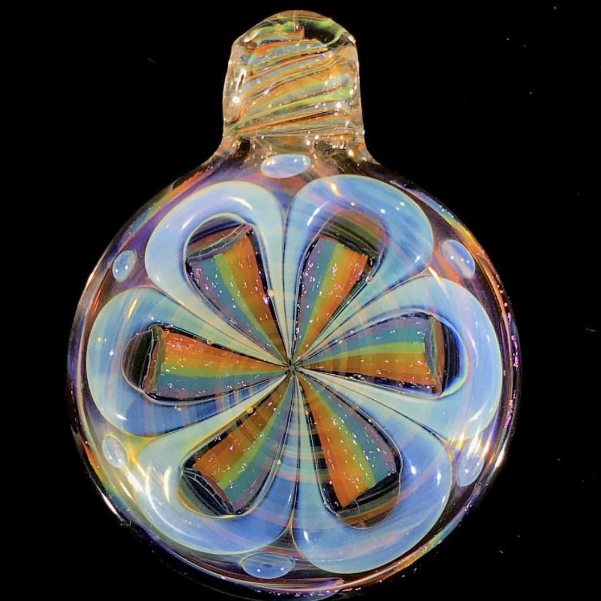

After traveling across the country for collaborative glass work for over 8 months in
2016, it was time to find a spot to call home. Never having lived on the Oregon
coast- and just having seen the rest of the country from northern CA to Philly and
back- it sounded perfect. Mushrooms started popping up on every walk and there began
the journey down the rabbit hole. Always enjoying gardening/ growing things,
mushroom cultivation had the nerdy complication that Kevin loves and he's found it a
natural calling.

Please
contact me
with any
questions. I'm in school and very busy these days but I check my email often and will get back
to you asap. My day job is usually making glass art- you can see more about me at
www.kevinnail.com and on


